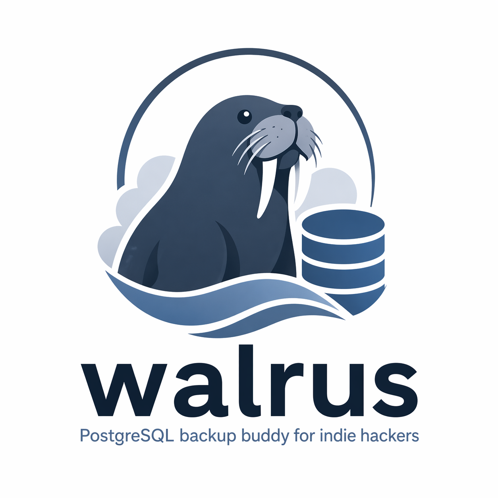

PostgreSQL backup buddy for indie hackers
One command to back up all your PostgreSQL databases to Cloudflare R2. Multi-server, disaster recovery, zero hassle.
curl -sSL https://raw.githubusercontent.com/LayFz/walrus/main/install.sh | sudo bash
Manage backups from all your servers in one place, no matter how many databases you run.
Backups stored on remote cloud storage. Restore on any machine even if the original server is completely gone.
Restore to any moment in the last 7 days, not just the last backup. WAL archiving every 5 minutes.
One-time setup, then fully automatic. Daily full backups + WAL sync every 5 minutes.
curl ... | sudo bashwalrus configwalrus initDaily 03:00 + WAL every 5 min
walrus statuswalrus restorewalrus config
Configure remote storage
walrus init
Register a project (interactive)
walrus backup
Run a full physical backup
walrus sync
Sync WAL logs to R2
walrus restore
Restore database from R2
walrus status
Show project status
walrus list
Show R2 backup details
walrus logs
View logs (-f for live tail)
walrus update
Update to latest version
Daily 03:00 Every 5 min
┌──────────────────┐ ┌─────────────────┐
│ pg_basebackup │ │ WAL archiving │
│ (full physical) │ │ (incremental) │
└────────┬─────────┘ └────────┬────────┘
│ │
│ --max-rate=30M │ new files only
│ --checkpoint=spread │ --checksum
▼ ▼
┌──────────────────────────────────────────────────────┐
│ rclone (--bwlimit 2M) │
└─────────────────────────┬────────────────────────────┘
│
▼
┌─────────────────┐
│ Cloudflare R2 │
│ (S3 / MinIO) │
└─────────────────┘